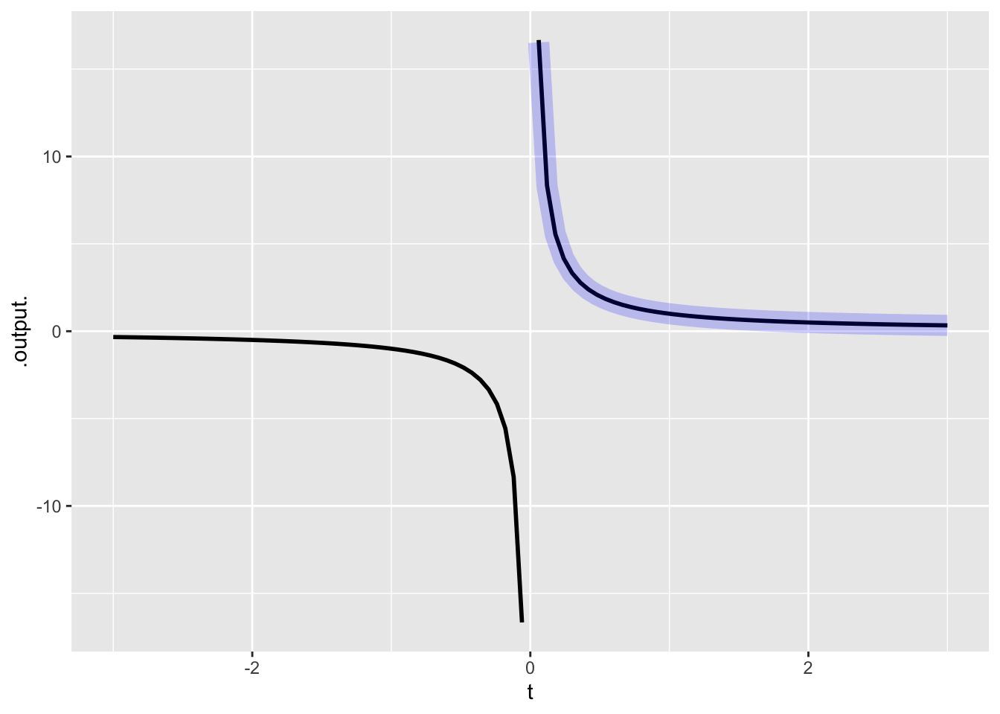

One of our pattern-book functions is \(e^x\), or, in computer notation, exp(). As you know, this is the exponential function, as are \(2^x\), \(10^x\), or \(7.321^x\). These functions all have the same shapes, the familiar exponential.
Figure 1: Some different denominations of exponential functions.
My personal favorite for a standard denomination is \(2^x\). People have an easy time understanding “doubling” and “halving,” and I would call this function \(\text{double}(t)\) and double(t). It would be easy to remember that \(2 \text{double}(t) = \text{double}(t + 1)\).
The convenience of \(\text{double}()\) is balanced, unfortunately, by a bit of an inconvenience. This has to do with the derivative, \[\begin{align}
{\cal D}_t \text{double}(t) & \equiv
\frac{\text{double}(t + h) - \text{double}(t)}{h}\\
& = \frac{2^{t+h} - 2^t}{h}\\
& = \frac{2^h - 1}{h}2^t
\end{align}\]
The brilliant thing here is that \[{\cal D}_t\, \text{double}(t)\ \propto\ \text{double}(t),\] the derivative is proportional to the function itself!
The constant of proportionality is \(\frac{2^h - 1}{h}\). What number is this, and does it depend on \(h\)?
Clearly \(\frac{2^h - 1}{h}\) does depend on \(h\), but for \(h\) very small, it approaches 0.693. (Make \(h\) smaller still in the graph.)
It’s inconvenient to have to remember the proportionality constant 0.693. Could we choose some other base for the exponential function that would make the constant of proportionality 1?
Try it by making \(h\) small (say, h = 0.000001) and plotting out the constant of proportionality as a function of the base:
A base somewhere between 2 and 3 will lead to a constant of proportionality of 1. Zoom in and find it.
Or, find the zero-crossing of the function
Does this depend on \(h\)? Try it.
\(e\) (that is, exp(1)) is the number that makes the constant of proportionality 1:
\[{\cal D}_t e^t = e^t\]
18.1 Differentiation rules for the pattern-book functions
\(\partial_x\) one(x) \(=\) zero(x)
\(\partial_x\) identity(x) \(=\) one(x)
\(\partial_x\) square(x) \(=\) 2 identity(x)
\(\partial_x\) reciprocal(x) \(=\) -1/square(x)
\(\partial_x\) log(x) \(=\) reciprocal(x)
\(\partial_x\) sin(x) \(=\) cos(x)
\(\partial_x\) exp(x) \(=\) exp(x)
\(\partial_x\) sigmoid(x) \(=\) gaussian(x)
\(\partial_x\) gaussian(x) \(=\) - x gaussian(x)
Let’s confirm these using our simple rateOfChange() function:
Warning in log(t): NaNs produced
Warning in log(t): NaNs produced
Warning in log(t): NaNs produced
Warning in log(t): NaNs produced
Warning: Removed 51 rows containing missing values or values outside the scale range
(`geom_line()`).

Activities 8, 9, 10, 11 in Chapter 19 exercises.
18.2 Exercise 11
Let’s explore the derivative \(\partial_x \frac{1}{x}\) using the evanescent-h method.
The general definition of the derivative of a function \(f(x)\) is the limit as \(h\rightarrow 0\) of a ratio: \[\partial_x f(x) \equiv \underbrace{\lim_{h \rightarrow 0}}_\text{limit}\ \underbrace{\frac{f(x + h) - f(x)}{h}}_\text{ratio}\ .\] For an evanescent-h calculation, we put aside for a moment \(\lim_{h\rightarrow0}\) and operate algebraically on the ratio. In our operations, we treat \(h\) as non-zero.
Substitute in \(f(x) = 1/x\) and show step-by-step that the ratio (for non-zero \(h\)) is equivalent to \(- \frac{1}{x^2 + hx}\).
The domain of the function \(1/x\) is the entire number line, except zero. Examine the expression \(- \frac{1}{x^2 + hx}\) to see if setting \(h\) to zero would ever involve a division by zero for any \(x\) in the domain of \(1/x\).
If setting \(h=0\) cannot cause a division by zero, it is legitimate to do so. Set \(h=0\) and simplify the expression \(- \frac{1}{x^2 + hx}\). Compare this to the rule for \(\partial_x \frac{1}{x}\) given in MOSAIC Calculus Ch. 19.
18.3 Exercise 7
Consider the function \(f(x) \equiv \frac{x-3}{x-3}\). Simple algebra suggests that the output will be 1 for any \(x\) value input, but the rules are division mean that the output is undefined for input \(x=3\). Thus, the function has a “singularity” at \(x=3\). We want to test whether this singularity is removable, that is, whether the function has a finite limit as \(x \rightarrow 3\). The computer can help us out. The basic idea is to try inputs closer and closer to \(x=3\) and see if the output behaves nicely. To help you distinguish between non-removable and removable singularities (or, in the words of the song “Santa Claus is Coming to Town”, to know “who’s naughty or nice”), Listing 1 defines the function \(f()\) and a similar function \(g()\). Try out both \(f()\) and \(g()\) for a sequence of inputs that get closer and closer to \(x=3\) but are not exactly 3.